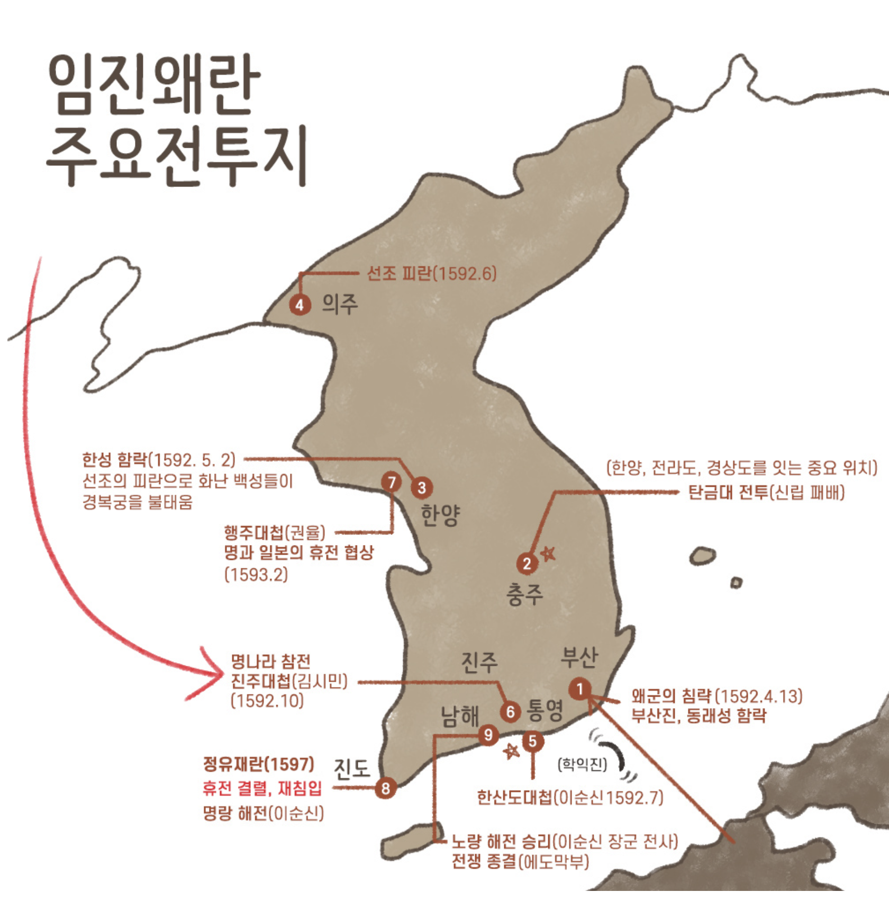

조선
1392년 ~ 1897년
(대한제국 1897년 ~ 1910년)
태조 이성계를 시작으로 순종까지 약 500년간 총 27명이 왕이 나라를 다스렸습니다. 조선 말기 고종이 대한제국을 선포하여 1910년 8월 29일 일제강점기가 시작되기 전까지는 대한제국으로 불렸으나, 조선과 비교하여 국호와 직제 외 특별히 변경된 것이 없어 이 시기를 조선사에 포함시키기도 합니다.
정치문화 : 유학, 성리학(주자학, 이기론), 실학, 6조 직계제(왕권 강화), 의정부 서사제(정승 강화), 훈련도감 등
관련인물 : 정도전, 김옥균, 신사임당, 황진이, 임꺽정, 김홍도, 신윤복, 황희, 맹사성, 허준, 이이, 이황, 박지원, 김종서 등
유물유적 : 경국대전, 훈민정음, 남한산성 삼전도비, 종묘, 동의보감, 난중일기, 천상열차분야지도, 측우기, 앙부일구, 자격루, 분청사기, 청화 백자, 원각사지 10층 석탑, 보은 법주사 팔상전, 사군자, 초충도 등
조선 말기의 사회 문화
모내기법 일반화(이앙법), 보부상, 덕대가 광산을 전문적으로 경영, 왕조 교체를 예언한 정감록 유행, 양반의 증가(공명첩과 납속책을 이용한 신분상승, 족보 위조), 정제두 양명학을 연구하여 강화학파 형성
ㆍ개경 상인 : 송방, 의주의 만상과 동래의 내상을 중계(인삼 재배, 판매 등)
ㆍ경강 상인 : 한강을 근거지로 미곡과 소금 등을 거래, 선박의 건조 등 생산 분야 진출
ㆍ의주 상인 : 만상, 청나라와의 무역을 주도(은, 종이, 무명, 인삼 등)
ㆍ동래 상인 : 내상, 일본과 무역 관여
ㆍ평양 상인 : 유상, 평양을 중심으로 활동

사림의 성장과 붕당정치
(사림과 훈구파의 정치 권력 이동 관계)
1. 급진개혁파 : 정도전, 조준 등 > 조선 개국 공신 > 훈구파 > 사림 공격(4대 사화) > 훈구파 몰락(15C)
2. 온건개혁파 : 정몽주, 이색 등 > 낙향하여 향촌에서 후진 양성(유향소, 서원, 향약) > 성종이 훈구파 견제를 위해 사림등용 (언론 삼사 사헌부, 사간원 홍문관에 사림 배치) > 훈구파 처리와 이조전랑직을 두고 동인(이황)과 서인(이이)으로 붕당 > 동인은 북인과 남인으로 분파 > 서인은 노론과 서인으로 분파 > 노론은 벽파와 시파로 분파됨

[1] 태조 이성계(1392~1398) : 한양 천도, 정도전의 재상중심정치, 정도전《불씨잡변》, 《조선경국전》, 《경제육전(최초 법전)》, 《경제문감》 편찬, 숭유 억불 정책, 천상열차분야지도 제작, 중앙에 성균관, 지방에 향교 설치(유교 교육), 과전법 실시(경기 지역 토지에 한정, 전현직 관리, 수신전과 휼양전 지급, 1 결당 30두), 1차 왕자의 난(이방원)
[2] 정종(1392~1398) : 개경 천도, 2차 왕자의 난(이방원에게 양위)
[3] 태종 이방원(1400~1418) : 왕권 강화, 6조 직계제, 한양 천도, 창덕궁 건설, 전국을 8도로 나누고 관리 파견, 사병 혁파, 양전 사업(토지조사), 호패법(인구조사), 혼일강리역대국도지도(중국중심세계관의 동양 최고 세계 지도), 명과 사대관계, 주자소 설치(계미자), 신문고 설치, 문하부 낭사를 사간원으로 독립(관리 견제)
[4] 세종(1418~1450) : 의정부 서사제, 4군 6진 개척(최윤덕과 김종서를 통해 여진족 토벌 후 현재의 국경선 확보), 쓰시마섬 정벌(이종무), 집현전 설치, 훈민정음 창제(1443), 최초 한글작품 《용비어천가》 편찬, 연분9등법과 전분 6등법, 앙부일구, 자격루, 혼천의 등 천문 관측 기구 제작, 농서 《농사직설》 편찬, 역법서《칠정산》 편찬, 의학서《향약집성방》 편찬, 《삼강행실도》 편찬, 세계 최초 다연발 로켓 화포 신기전 개발(1443), 일본에 삼포 개항(부산포, 염포, 제포), 계해약조 체결
[5] 문종(1450~1452) : 조선 최초 적장자 출신, 세자시절 측우기 발명, 《고려사》, 《고려사절요》 편찬
[6] 단종(1452~1455) : 황보인과 김종서의 섭정, 수양대군의 계유정난으로 폐위
[7] 세조(1455~1468) : 계유정난(1453), 단종 복위 운동(1456), (계유정난으로 정난 공신인 훈구파 형성), 왕권 강화, 6조 직계제, 직전법 실시(현직관리, 수신전, 휼양전 폐지), 집현전과 경연 폐지, 이시애의 난 > 유향소 폐지(향리 감찰), 《경국대전》 편찬 시작, 말년에 불교에 귀의하여 원각사 창건(1465)
※ 단종 복위 운동
* 사육신 : 단종을 위해 목숨을 바친 충신(성산문, 박팽년, 하위지, 이개, 유성원, 유응부 6명의 충신)
* 생육신 : 살아서 단종을 위해 싸운 충신(김시습, 원호, 이맹전, 조려, 성담수, 남효온 6명의 충신)
[8] 예종(1468~1469) : 삼포(부산포, 염포, 제포)에서 일본과 개별 무역 금지
[9] 성종(1469~1495) : 경연 활성화, 홍문관 설치(집현전 계승, 별칭 옥당), 유향소 부활(향청), 《경국대전》 완성(법전), 문화의 황금기 《동국여지승람》, 《동국통감》, 《악학궤범》 등 편찬, 관수관급제(국가가 수조권 관리), 언론 삼사에 사림 등용(훈구 견제)
* 삼사 : 사헌부(감찰), 사간원(간쟁), 홍문관(정책 자문)
[10] 연산군(1494~1506) : 무오사화(김종직 조의제문), 갑자사화(폐비윤씨 사사사건), 흥청망청의 기원, 후궁 장녹수
* 4대 사화 : 사림세력이 화를 당한 네번의 옥사(무오사화 > 갑자사화 > 기묘사화 > 을사사화)
[11] 중종(1506~1544) : 중종반정(훈구파가 주도), 홍문관 기능강화, 조광조의 개혁 정치(위훈 삭제, 소격서 폐지, 현량과 실시), 기묘사화(주초위왕, 훈구가 조광조 제거), 백운동서원 설립(주세붕, 한국최초의 서원), 삼포 왜란(제포, 부산포, 염포의 왜놈들이 활동 제약에 불만을 품고 폭동을 일으킨 사건, 비변사를 임시기구로 설치)
[12] 인종(1544~1545) : (명종 즉위를 위한 양어머니 문정왕후의 독살설이 야사로 전해짐)
[13] 명종(1545~1567) : 문정왕후의 섭정, 을사사화(외척 소윤과 대윤의 싸움), 을묘왜변(1555) > 비변사 설치(삼포왜란에 임시기구로 설치되어 명종 때 상설기구화, 임진왜란 이후 최고 기구화), 임꺽정의 난, 직전법 폐지, 녹봉 지급
[14] 선조(1567~1608) : 주자학의 보급 장려, 붕당의 형성(훈구파 처리문제와 이조전랑 임명 문제로 사림이 동인과 서인으로 붕당), 정여립 모반사건, 사림 대거 등용, 임진왜란(1592), 행주대첩(권율)(1593), 정유재란(1597), 10만 양병설(이이), 속오군(지방군), 훈련도감 설치(오군영, 류성룡 건의), 곤여만국전도(마테오리치), 조선통신사 12회 파견(선조 ~ 순조)
* 속오군 : 왜란 중 속오법에 따라 속오군 체제로 개편, 평상시 생업에 종사하다가 유사시 동원
* 훈련도감 : 류성룡의 건의로 창설된 5군영 중 하나로 포수, 사수, 살수의 삼수병으로 편성, 직업 군인, 급료 받는 상비군 * 임진왜란(1592~1598) : 한산도대첩(1592, 학익진, 경복궁 화재) → 진주대첩(1592, 김시민) → 행주대첩(1593, 권율)
* 정유재란(1597) : 명량해전(1597) → 노량해전(1598, 이순신 장군 전사)
* 임진왜란 당시 의병장들의 활약 : 곽재우(홍의장군), 조헌, 고경명, 김천일, 서산대사, 사명대사 등(본진에서 익숙한 지리적 이점으로 승리)

[15] 광해군(1608~1623) : 북인 정권(최초이자 마지막), 명과 후금 사이 중립 외교, 선혜청 설치, 대동법 시행(경기/토지에 대한 세금 1결 12두), 허균 최초의 한글 소설《홍길동전》편찬, 허준 조선 의학서《동의보감》편찬, 영창대군 살해, 인목대비 폐비시켜 유폐(서인 세력의 반정의 명분), 강홍립 명나라를 위한 부대 파병, 일본과 기유약조 체결(제한된 범위의 무역 허용)
* 대동법 : 특정 특산물을 공납하는 대신 쌀로 통일하여 바치게 한 납세 제도, 방납의 폐해가 가장 심한 경기도 지역부터 실시되었음. 김육이 대동법 확대 시행을 주장
[16] 인조(1623~1649) : 인조반정(서인세력), 이괄의 난(반정의 논공행상에 불만), 친명배금 정책, 오군영 중 어영청, 총융처으 수어청설치, 정묘호란(1627), 병자호란(1636, 후금이 국호를 "청"으로 바꾸고 조선에 군신관계를 요구), 남한산성 삼전도 굴욕(삼전도비), 영정법 실시(1결당 4두)
* 병자호란 : 척화파(윤집, 김상헌) VS 주화파(최명길) 대립, 척화론 우세 → 청나라 침입 → 인조 삼전도 굴욕 → 소현세자와 봉림대군 청에 인질로 잡힘 →청과 군신 관계 체결
[17] 효종(1649~1659) : 북벌정책 추진(송시열, 서인들의 정권 유지 수단), 나선 정벌, 하멜(네덜란드인)의 제주도 표착
[18] 현종(1659~1674) : 예송논쟁(인조의 계비 자의대비의 상복 착용 기간을 놓고 벌인 서인과 남인 간의 예절 논쟁(정당간의 기싸움), 장남이 아니니 서인은 1년 - 남인은 3년상 주장) > 1차 예송논쟁 서인 승리(기해예송), 2차 예송논쟁 남인 승리(갑인예송)
[19] 숙종(1674~1720) : 조선 최고 왕권, 인현왕후(서인), 장희빈(남인), 환국정치(경신환국, 기사환국, 갑술환국), 상평통보 주조, 백두산정계비설치(영토경계선), 안용복 사건(일본인들의 울릉도 출입 금지), 금위영(오군영) 설치, 대동법 확대(전국), 곤여만국전도(조선에서 모사한 세계지도)
※ 환국정치
ㆍ경신환국(1680) : 복선군 추대, 남인 일파가 정치적으로 대거 실각, 서인 등용
ㆍ기사환국(1689) : 송시열 파직, 서인 몰락 남인 집권 (장희빈의 소생을 원자로 삼음)
ㆍ갑술환국(1694) : 남인 몰락, 서인 재집권(인현왕후 복위운동)
[20] 경종(1720~1724) : 장희빈의 아들, 어사 박문수 활동
[21] 영조(1724~1776) : 이인좌의 난(소론과 남인이 경종의 죽음에 영조와 노론이 관계되어 있다 주장), 탕평책과 탕평비, 신문고 부활, 균역법, 금주령, 구황작물 고구마를 일본에서 들여옴, 《속대전》편찬(법전), 사도세자 죽음(소론계), 서원 정리, 이조전랑 권한 축소, 동국대지도 100리척(정상기), 가체 금지령, 노비 종모법
* 균역법 : 토지 1결당 군포 부과, 1년에 군포 2필에서 1필로 줄인 군역세법
[22] 정조(1776~1800) : 조선의 르네상스, 재위 초기 홍국영의 세도정치(실각), 시시비비 탕편론, 소론과 남인 계열 중용, 장용영 설치(친위부대), 수원화성 축성(정약용 거중기), 규장각 설치(서얼 진출, 박제가 등 검서관에 기용), 초계문신제(관리의 재교육), 《대전통편》 법전 편찬, 신해통공(금난정권 폐지), 신해박해(천주교박해), 박제가, 박지원, 김홍도와 신윤복의 풍속화 유행
※ 실학자 정리
중농학파(토지개혁), 유형원(균전론), 이익(한전론), 정약용(여전론)
ㆍ유형원 : 《반계수록》에서 균전론을 내세움
ㆍ이익 : 《성호사설》, 《성호문집》, 《곽우록》 저술
ㆍ정약용 : 《목민심서》, 《흠흠신서》, 《경세유표》
중상학파(상공업진흥), 유수원, 홍대용, 박지원, 박제가(소비론)
ㆍ유수원 : 농업의 상업적 경영과 기술 혁신 주장
ㆍ홍대용 : 지전설 주장, 중국 세계 중심관 비판
ㆍ박지원 : 수레와 선박의 이용 및 화폐유통의 필요성 주장, 《열하일기》, 《양반전》, 《허생전》 저술
ㆍ박제가 : 재물을 우물물에 비유하여 절약보다 소비를 권장, 《북학의》 저술
<세도 정치 시작>
[23] 순조(1800~1834) : 정순왕후 김씨의 수렴청정, 안동김씨 세도정권 확립(비변사 장악), 신유박해(천주교박해), 벽파의 정권 장악, 시파 숙청, 삼정문란, 매관매직 성행, 홍경래의 난(평안도 차별), 장용영 혁파, 정약용 [목민심서], 공노비 해방, 유희 [언문지](한글 연구서)
[24] 헌종(1834~1849) : 안동김씨 세도정치기, 한국의 최초 천주교 사제 김대건 신부 처형
[25] 철종(1849~1863) : 안동김씨 세도정치기, 강화 도령(철종 별명), 동학 창시(1860, 최제우, 인내천, 시천주), 대동여지도 제작(1861, 김정호), 진주민란(1862) → 임술농민봉기(박규수가 안핵사로 파견) → 삼정이정청 설치(삼정의 개혁 공포)
[26] 고종(1864~1907), [27] 순종(1907~1910) : 현대사/개항기 참고
* 선조는 조선 최초의 서자 출신이자 최초 방계 혈통 임금이다.
* 적장자로 왕위계승을 한 왕은 문종, 단종, 연산군, 인종, 현종, 숙종, 경종(서장자), 순조로 8명 뿐이다.